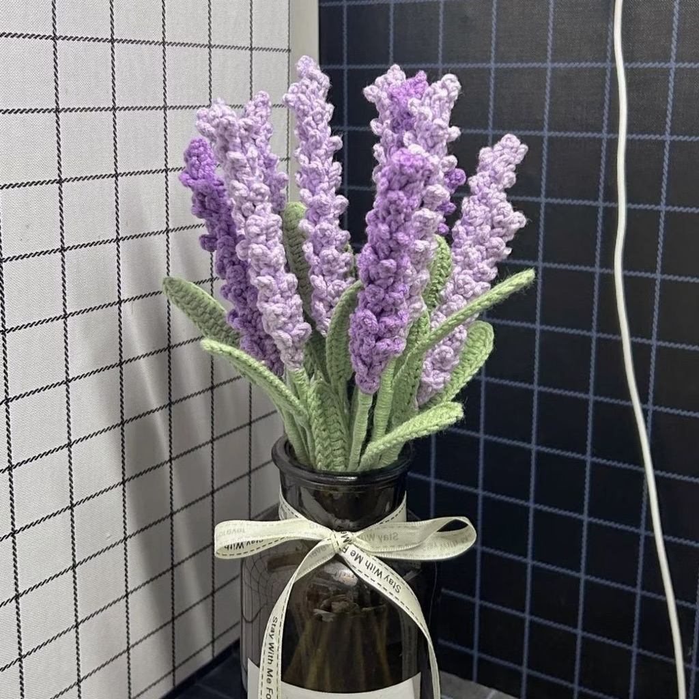
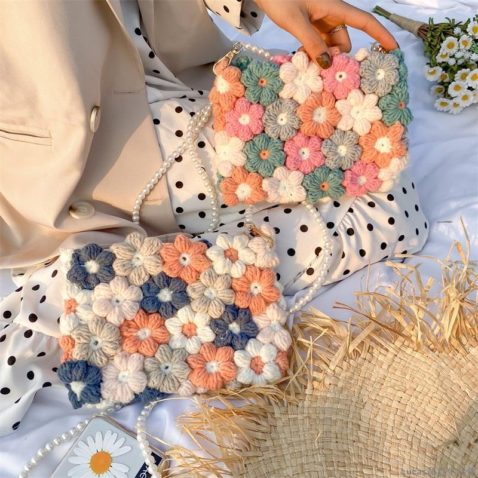
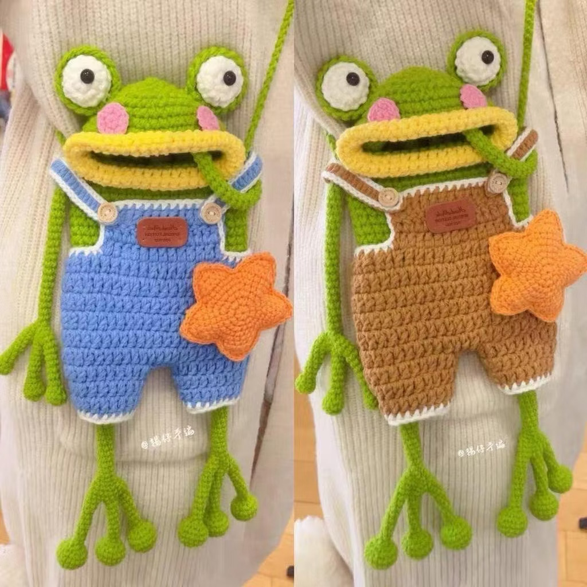

KNITTED WITH LOVE
每一針、每一線，都是慢慢完成的溫柔日常。
WELCOME TO ZHIXIN
歡迎來到織心手作！我們將普通的毛線， 透過雙手變成可愛又實用的手工藝品。 每一件作品都帶著溫暖與心意。

HANDMADE COLLECTION
每一件作品，都是獨一無二的溫暖。

可愛又實用的手工編織包。
不會凋謝的毛線花束。

輕巧方便的日常小包。
HOW TO SHOP
挑選商品、了解購物方式，讓每一份手作溫暖你的生活。